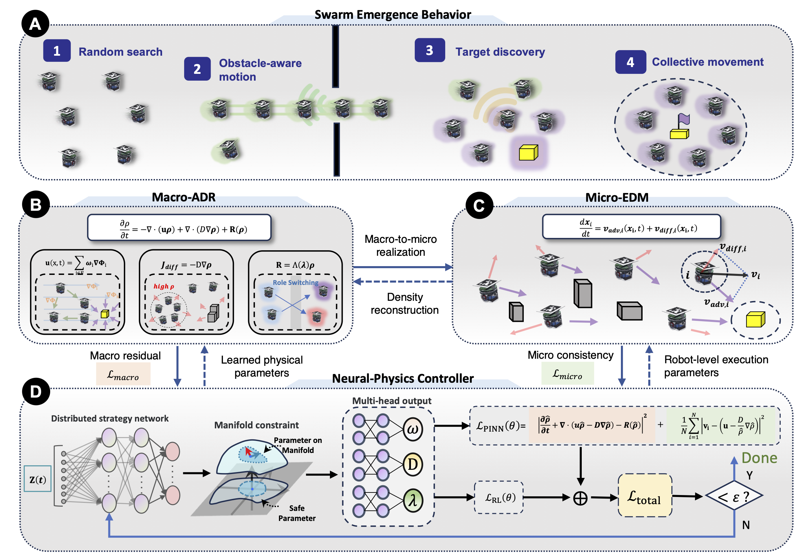
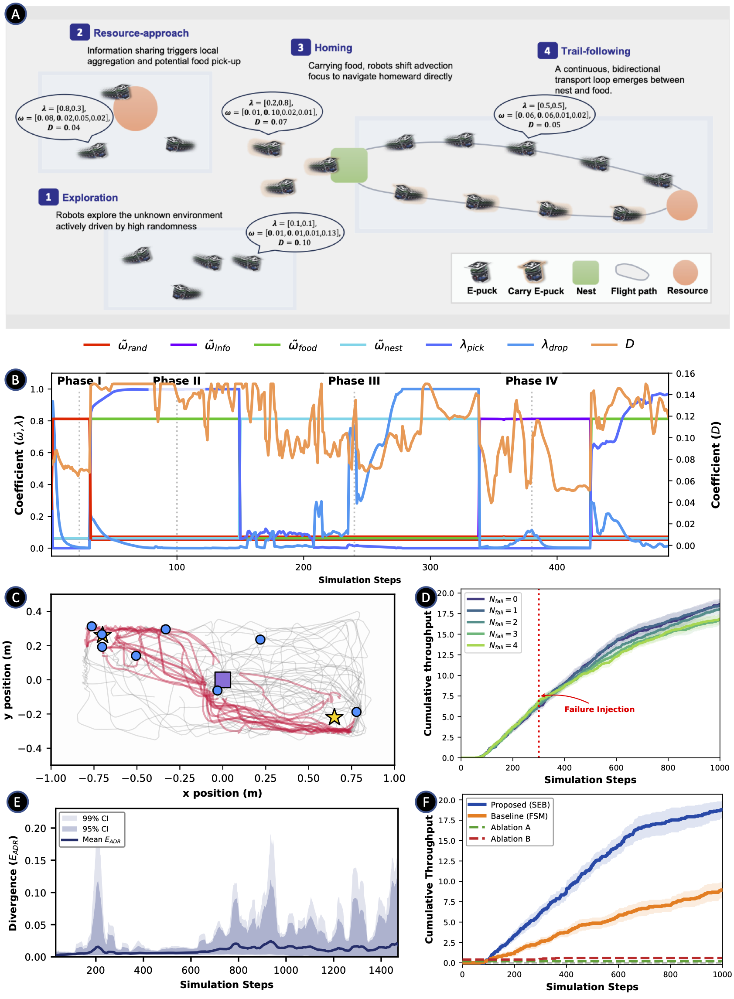
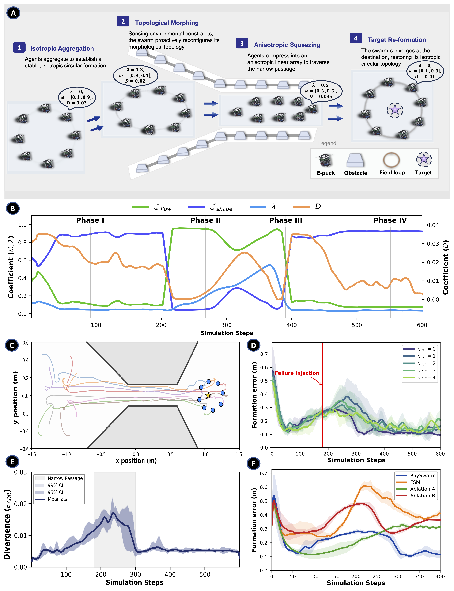
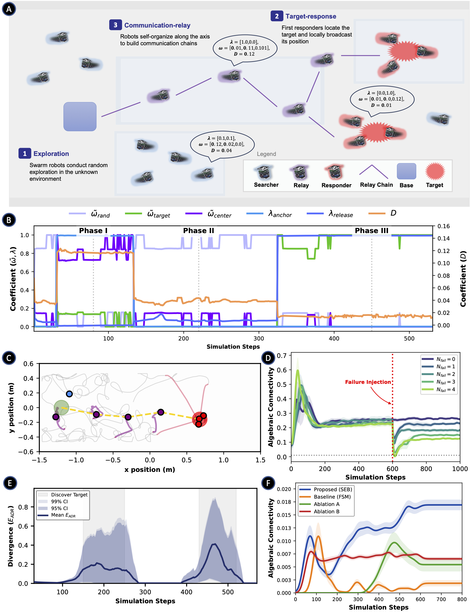
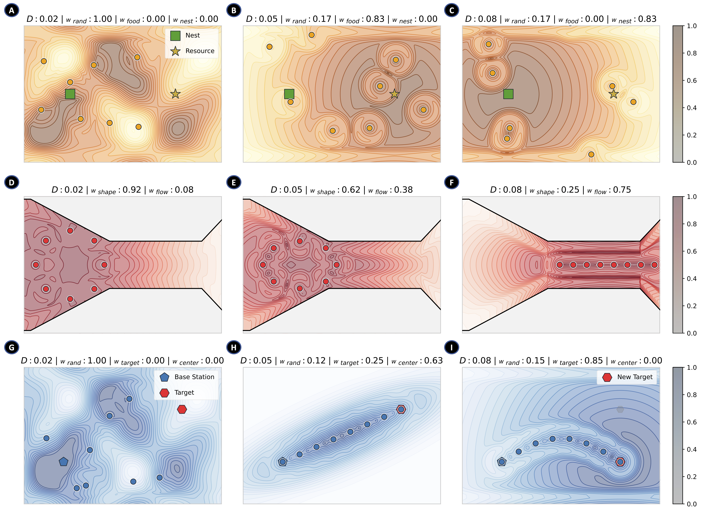

Physics-Informed Modeling and Control of Emergent Behaviors in Robot Swarms
PhySwarm: a physics-informed micro-macro framework that learns interpretable parameters for controlling multi-stage emergent behaviors in robot swarms.
Abstract
Robot swarms can exhibit coherent collective behaviors through local perception, limited communication and decentralized decision-making, yet modeling and controlling such emergence remains challenging when behaviors unfold over multiple phases. Here we introduce PhySwarm, a physics-informed micro–macro framework that represents multi-stage swarm emergence as physically constrained density-field evolution coupled to executable robot motion. At the macroscopic level, a multi-phase advection–diffusion–reaction model (Macro-ADR) describes phase-dependent swarm-density evolution through directed transport, diffusion-based spatial regulation and behavioral phase transitions. At the microscopic level, a Microscopic Equivalent Deterministic Motion model (Micro-EDM) realizes these mechanisms through potential-field advection, density-gradient compensation and rate- or event-gated phase switching. A Neural-Physics Controller maps local observations and temporal memory to bounded physical parameters and is trained with a reinforcement learning–PINN objective. In proof-of-concept swarm missions, including trail-guided foraging, formation-reconfigurable navigation and role-adaptive search and rescue, PhySwarm generates distinct multi-stage emergent behaviors within a unified physics-informed modeling framework.
Overview
Swarm emergence is neither solely an individual-level control problem nor only a macroscopic pattern-generation problem. PhySwarm represents collective organization as a closed loop between density-field dynamics, robot-level execution and learned physical parameters.

Framework overview. PhySwarm couples Macro-ADR density dynamics, Micro-EDM robot-level execution and NPC-based physical-parameter learning through a shared parameter interface P(t) = {ω(t), D(t), λ(t)}.
Macro-ADR
A multi-phase advection--diffusion--reaction model describes phase-conditioned swarm-density evolution. Advection captures task-directed transport, diffusion regulates density and safety margins, and reaction redistributes robots among behavioral phases or functional roles.
Micro-EDM
A Microscopic Equivalent Deterministic Motion model converts Macro-ADR mechanisms into executable robot motion. It realizes potential-field advection, density-gradient compensation and event- or rate-gated phase switching.
NPC
The Neural-Physics Controller maps local observations and temporal memory to bounded physical parameters P(t) = {ω(t), D(t), λ(t)}. These parameters are optimized by combining task rewards with macro- and micro-scale physics-informed residuals.
Proof-of-concept swarm missions
Trail-Guided Swarm Foraging
Tests information-guided exploration, resource approach, carrying-to-nest and trail-mediated reuse. The learned fields organize an exploration--exploitation cycle without hard-coding a fixed transport path.
Formation-Reconfigurable Navigation
Tests geometry-constrained collective navigation. The swarm preserves formation in open space, compresses in a narrow passage and recovers its morphology near the target region.
Role-Adaptive Search and Rescue
Tests task-triggered role differentiation. Robots transition among search, response and relay roles to localize targets and maintain a base--target communication pathway.
Main experimental results

Trail-Guided Swarm Foraging. PhySwarm generates exploration, resource approach, homing and trail-following within one physical model.

Formation-Reconfigurable Navigation. The swarm compresses through geometric constraints and recovers its target morphology.

Role-Adaptive Search and Rescue. Robots self-organize into search, response and relay roles to maintain base--target connectivity.

Physical interpretability. Density-field evolution and physical visualization across three multi-stage swarm tasks.
Density-field evolution and physical visualization
Supplementary movies showing how learned advection weights, diffusion coefficients and reaction rates reshape density fields and microscopic robot motion across task phases.
Supplementary Movie 1. Trail-guided foraging: density-field transition from exploration to resource approach, homing and trail following.
Supplementary Movie 2. Formation-reconfigurable navigation: density evolution during formation keeping, morphology adaptation and recovery.
Supplementary Movie 3. Role-adaptive search and rescue: density-field organization during search, response and relay formation.
Fault-tolerance verification
Supplementary movies showing how the remaining robots reorganize after partial robot failures without retraining or task-specific recovery rules.
Supplementary Movie 4. Fault tolerance in trail-guided foraging under robot failures.
Supplementary Movie 5. Fault tolerance in formation-reconfigurable navigation during passage traversal.
Supplementary Movie 6. Fault tolerance in role-adaptive search and rescue with relay-chain reorganization.
Scalability verification
Supplementary movies showing how the same PhySwarm interface scales to larger robot populations while preserving task-relevant collective structures.
Supplementary Movie 7. Scalability in trail-guided foraging with larger robot teams.
Supplementary Movie 8. Scalability in formation-reconfigurable navigation through constrained passages.
Supplementary Movie 9. Scalability in role-adaptive search and rescue with larger relay and response structures.
Real-robot validation
Supplementary movies showing deployment on the physical e-puck platform under sensing, actuation, localization and communication imperfections.
Supplementary Movie 10. Real-robot validation of trail-guided foraging.
Supplementary Movie 11. Real-robot validation of formation-reconfigurable navigation.
Supplementary Movie 12. Real-robot validation of role-adaptive search and rescue.
What does the controller learn?
Advection weights ω
Control how physical field bases are combined to define directional migration.
Diffusion coefficient D
Regulates spatial spreading, density equalization, congestion suppression and safety margins.
Reaction rates λ
Govern behavioral phase transitions and role redistribution while preserving total robot mass.
Theoretical and supplementary analyses
The supplementary materials provide the physical interpretation of the ADR terms, modeling guidelines, scenario-specific implementations, NPC network configuration, experimental arena setup, evaluation metrics, baseline and ablation details, and theoretical analyses of boundedness, conditional controllability and controller convergence.
BibTeX
@misc{jin2026physicsinformedmodelingcontrol,
title={Physics-Informed Modeling and Control of Emergent Behaviors in Robot Swarms},
author={Jin, Zixuan and Zhang, Wenzhuo and Quan, Shuxian and Dong, Zirui and Ye, Fangwen and Shi, Yuchen and Xu, Cheng},
year={2026},
eprint={2606.01597},
archivePrefix={arXiv},
primaryClass={cs.RO},
doi={10.48550/arXiv.2606.01597},
url={https://arxiv.org/abs/2606.01597}
}